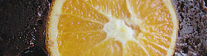

Schokopudding mit ganzer Orange
4,5 von 6ein ganze orange für 10 min kochen. danach mit einer gabel rundum einstechen.eine schüssel einfetten und 80 g butter, 50 g dunkle schokolade in einem wasserbad zerlaufen lassen. 170 g mehl und 50 g kakaopulver in eine rührschüssel geben, die zerlassene butter, die geschmolzene schokolade, 170 g zucker, 2 eier, 1 tl backpulver und 2 el milch mischen. 1/3 der masse in die form geben und die orange in die mitte setzen. nochmals 80 g flüssige butter und 80 g zucker darüber verteilen und die restliche darüber geben. zugedeckt 2 stunden im wasser bad sieden lassen.
